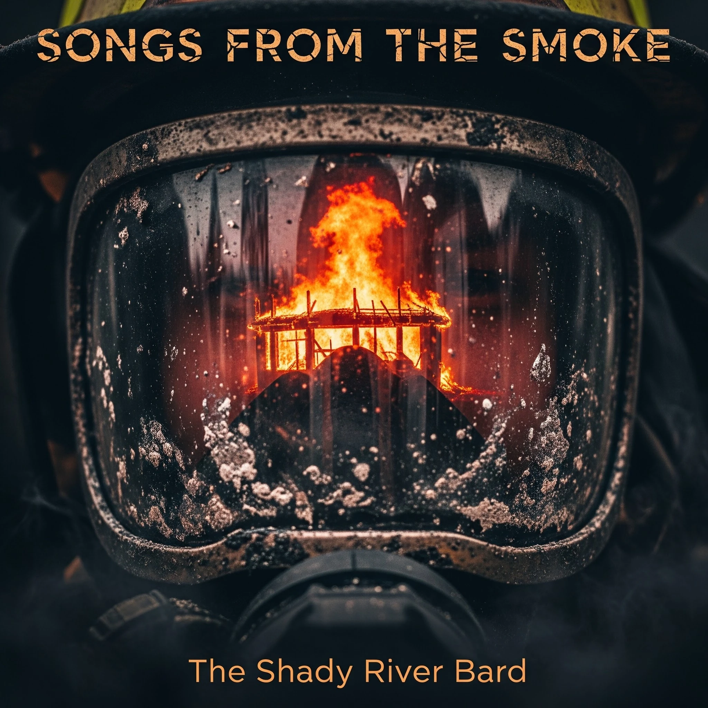

SONGS FROM THE SMOKE
A definitive, 14-track sonic documentary exploring the lived psychology, physical grit, and invisible sacrifice of the fire service. Mapping a career lifecycle onto a harrowing 24-hour shift across four progressive acts—from the adrenaline spike of the 3 AM tone and sensory isolation of zero-vis interior attacks, through the harrowing 42 seconds of the Boyd Street explosion, to secondary trauma in the home and the sacred four fives bell ritual.

The Fire Service Jukebox
Stream the complete 14-track cycle with clean literary lyrics, tactical survival context, and occupational psychology analysis.
1. Zero to One Hundred
The occupational phenomenon of sleep inertia disruption: station alarms in the dead of night instantly trigger massive catecholamine and cortisol spikes.
This is the opening track of the album (Act I: The Bell). It captures the physiological violence of the 3 AM station tone.
Thematic Exhibits: Behind the Visor
Explore the psychological, tactical, and domestic realities of the modern fire service across four curated exhibits.
Zero-Visibility, The Regulator, & Long Lugs Lead Out
Inside a burning structure with zero visibility, the brain enters “tactical hibernation.” The external cacophony of sirens and structural cracking fades into profound auditory exclusion. Survival narrows strictly to the rhythmic hiss-click of the SCBA regulator and tactile contact with the hoseline. When structural collapse occurs or disorientation strikes on a spongy floor, a firefighter finds the hose coupling in total blackness: feeling for the male coupling with its protruding rocker lugs. The rule of thumb—long lugs lead out—serves as the tactile map guiding the crew out of the abyss.
The Fire Service Lifecycle Matrix
Analyzing the physiological, tactical, and emotional dimensions across all four acts of the 24-hour shift and career continuum.
| Dimension / Phase | Act I: The Anticipation (1–3) | Act II: The Fight (4–7) | Act III: The Aftermath (8–11) | Act IV: The Legacy (12–14) |
|---|---|---|---|---|
| Operational Setting | Apparatus bay, kitchen table, rural intersections | Zero-vis interior, burning roof, aerial ladder | Wash bay, quiet locker room, family home | Cemetery honor guard, sunlit breakfast kitchen |
| Physiological State | Delta-wave sleep violently spiking to 180 BPM | Extreme adrenaline, anaerobic exhaustion, heat stress | Exhaustion crash, chronic cortisol, sleep deficit | Circadian reset, parasympathetic decompression |
| Sensory Environment | Sudden klaxons, prison-break station lights | Black smoke, SCBA regulator hiss, roaring heat | Decontamination soap smell, heavy living room silence | Tolling silver bell, sizzling bacon, pouring coffee |
| Tactical Mechanism | Rapid turnout donning, radio dispatch acknowledgment | Hoseline navigation (“long lugs lead out”), PASS alert | Triage sorting, gross decon of turnout gear | Ceremonial Four Fives telegraph signal, domestic routine |
| Psychological Burden | Fear of the unknown call, hyper-vigilance | Mortal terror, survival tunnel focus, near-miss trauma | Moral injury of triage, secondary traumatic stress | Grief of fallen comrades, identity loss in retirement |
| Communal Dynamic | Egalitarian oak table, volunteer boot drives | Tactile partner reliance, mutual survival covenant | Marital strain, emotional withdrawal, peer counseling | Generational continuity, passing the torch to recruits |